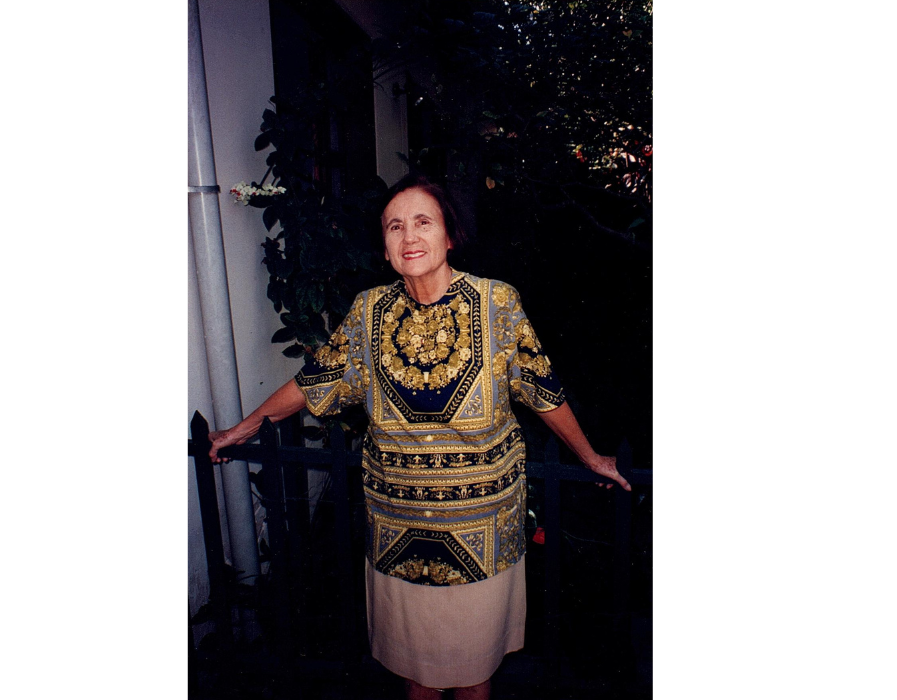

Maria José de Almeida Elias
Mãe, Escritora, Cristã e Esposa Dedicada

Seu Legado Continua
O legado de Maria José é como um rio que flui eternamente, nutrindo as margens por onde passa. Suas palavras, seu exemplo e seu amor continuam a ecoar através das gerações, como ondas que se expandem infinitamente em um lago sereno.
Cada vida tocada por ela é como uma chama acesa, passando adiante a luz que recebeu. Maria José não apenas viveu uma vida extraordinária, ela plantou um bosque inteiro de árvores sob cuja sombra ela sabia que nunca se sentaria. Seu impacto transcende o tempo, lembrando-nos que uma vida vivida com propósito e amor pode verdadeiramente mudar o mundo.